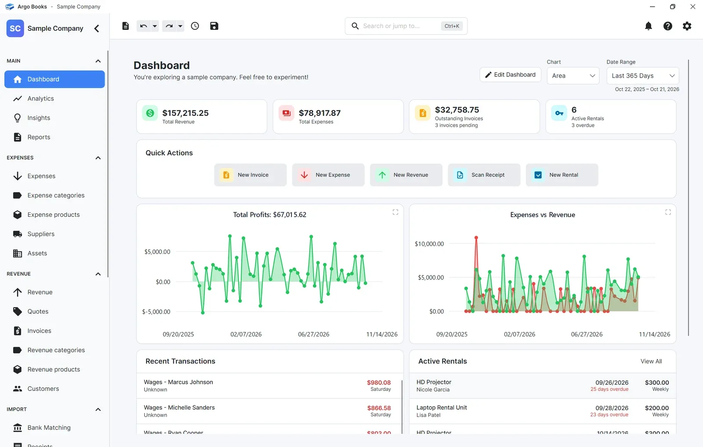

Argo Books
Invoices, expenses, inventory, payroll and reports in a desktop app that works offline and keeps each business's data encrypted on its own computer. It reads receipts with AI, so nobody has to type them in.
I also built the website that sells it: accounts, licence keys, payments through Stripe, PayPal and Square, a portal where my users' own customers pay their invoices, and a community forum. Underneath sit an 82-table MySQL schema, 275 test classes for the app and a PHPUnit suite for the site, all deployed through GitHub Actions.
When a user emailed about a problem, I reproduced it, shipped the fix and wrote back myself.
